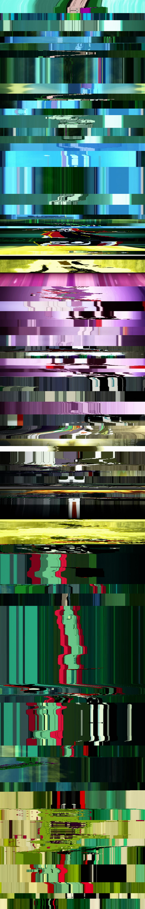

Pixel Line Movies
This image is comprised of one line from each frame of the first episode of Harley Quinn. (Similar to moviebarcode if you've ever seen that). This was the first stop on getting to some other ideas I've got.
